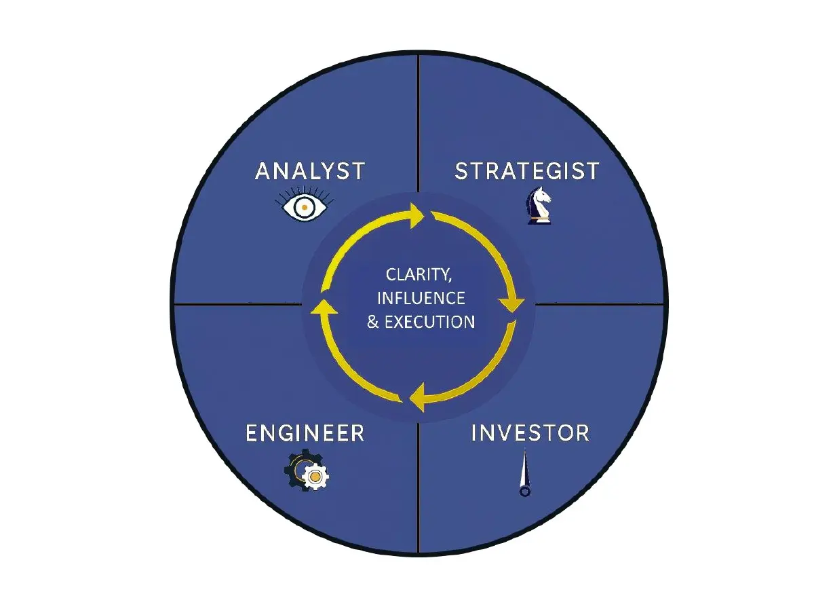
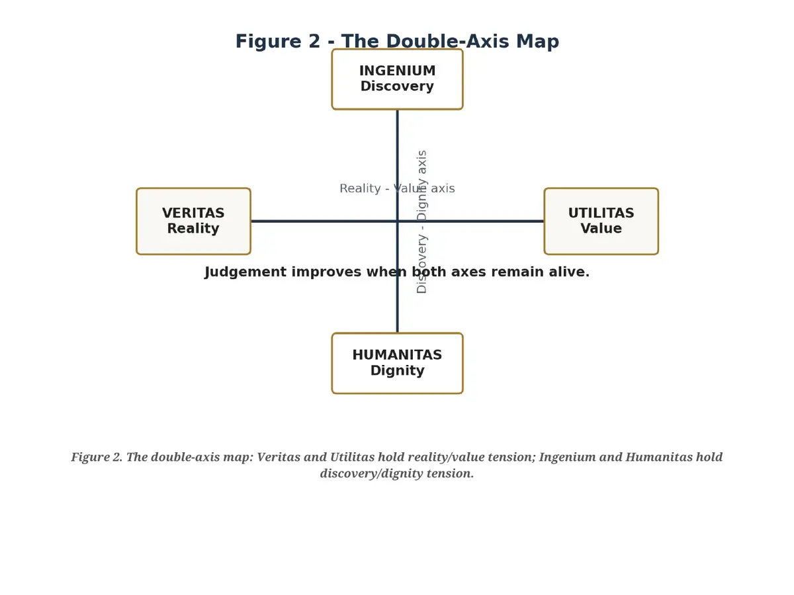

See reality
Separate signal from noise, incentives and incomplete information.
PROFILE NODE / DB-01 CPT / UTC+2 STATUS / ACTIVE
David Barske · Executive profile
A Cape Town–based CIO and strategist with 15+ years across business transformation, cybersecurity, intelligence, industrial operations and technology. David helps leaders turn fragmented information and operational complexity into clearer decisions, stronger systems and measurable value.
See the system. Find the value. Build what works.

Experience · Selected outcomes
Selected outcomes show the work in practice. The career arc that follows explains how systems analysis, intelligence, cybersecurity and industrial transformation came together.

AI · Commercial systems
70% reduction in response time
A controlled, AI-assisted workflow brought product configuration, costing and commercial judgement into one repeatable process—cutting response times while preserving human review and margin discipline.
Product strategy · Operations
R10m+ sales enabled
An externally dependent machinery category was converted into a repeatable internal commercial capability, supported by configuration logic, technical documentation and a clearer route from enquiry to delivery.
Control · Data analysis
~R1m loss exposure identified
Transaction analysis, exception testing and management dashboards exposed commission and accounting-control failures that were difficult to see in ordinary reporting.

Supplier intelligence · Margin
25% supplier cost improvement
Benchmarking, should-cost reasoning and structured vendor assessment created stronger negotiation leverage, clearer trade-offs and better visibility of the margin at stake.
Career arc
The timeline groups overlapping work into four eras, showing how systems analysis, intelligence, cybersecurity and industrial transformation reinforce one another.
Information Systems at UCT, university lecturing, business and systems analysis, database design, digital forensic readiness and corporate project delivery.
MBussSci (Information Systems) · UCT lecturer and researcher · ISSA 2010 publication · Microsoft Imagine Cup finalistIntelligence systems, GIS, link analysis, structured reasoning and operational coordination in high-risk conservation and organised-crime-adjacent environments.
Kruger joint operations room · Pathfinder · Head of Analysis, Rhula Intelligence SolutionsCyber intelligence, strategic risk, secure collaboration and information analysis across African and international stakeholder environments.
Co-founder, ATRIDS SA · Head of Research & Analysis, Focus Africa · Director of Information Systems, Focused ConservationFounder-led transformation, operational systems, AI-assisted workflows, commercial decision support and technical-to-executive translation.
Independent advisory · CIO, Bulkmatech Cape · Kairos and Axiom venture development
Featured article · Value systems
Grades, arrests and sales are useful measures. They also become dangerous when mistaken for value. Three real-world encounters reveal how proxy metrics can hide the outcome a system was built to create.
Read the field note ↗Thinking frameworks
These are practical ways of thinking—designed to make assumptions visible, keep judgement connected to reality and move from insight toward better action.

Four operating modes · Value creation
A practical operating system for moving from perception to disciplined commitment: see reality, shape the strategy, build the system and place the bet.
AXIS⁴ brings four complementary modes into deliberate sequence. The model helps prevent premature building, unsupported strategy and scattered investment by making the active mode explicit.
Use it to structure decisions, diagnose which capability is missing and move complex work from observation into execution without losing allocation discipline.

Recursive judgement · Legitimate value
A human-centred framework for testing whether an idea is true, intelligently understood, dignified in consequence and genuinely valuable.
Uomo Illuminato is not a linear checklist. Its four fields interrogate and correct one another, keeping cleverness connected to evidence, human dignity and value that is realised rather than merely claimed.
Use it where truth is uncomfortable, incentives distort behaviour, people carry hidden costs or an apparently clever solution risks becoming manipulative or extractive.
Independent ventures
Kairos, ATRIDS and Axiom are active ventures rather than personal experiments. Each provides a separate route for engaging David’s advisory, cybersecurity and applied-engineering capabilities.
Evidence-led advisory for decisions where facts, incentives, behaviour and timing collide.
Visit current site ↗ Cyber intelligenceIntelligence-led cyber resilience, authorised testing, incident readiness and specialist education.
Visit current site ↗ Applied engineeringEmbedded systems, sensing, industrial technology and bounded physical prototyping.
Visit current site ↗Project lab
Smaller than the ventures but deliberately practical, these projects turn curiosity into structured experimentation. Open a panel to see what each project is designed to do.
BASIL reduces capture friction, routes work through named subsystems and uses continuous feedback to improve estimation, prioritisation and follow-through. It is both a practical command system and a testbed for adaptive personal agents.
The project explores a repeatable evidence chain for battery decisions: identify the cell, preserve provenance, measure condition, grade potential use and keep safety controls visible throughout the process.
1453 organises a progressive home-lab journey from operating-system and infrastructure fundamentals through controlled network assessment, field logging and practical cybersecurity exercises. Theory supports the work; authorised practice begins immediately.
MAPS9 combines strategic thinking, cross-disciplinary synthesis and psychological insight with structured scaffolds for planning, analysis, communication, decisions and rapid prototyping. Its Byzantium Protocol adds precision, compression, contradiction checks and drift control.
Structured analysis toolbox
A growing public resource on structured analytic techniques: what each technique is for, when to use it and how to avoid false confidence.
Expose the beliefs that must be true for a judgment or plan to hold.
Structured analytic techniqueCompare multiple explanations against the full evidence set, including inconsistency.
Structured analytic techniqueDefine observable changes that would confirm, weaken or redirect an assessment.
Structured analytic techniqueEvaluate source access, reliability, corroboration, gaps and possible distortion.
Structured analytic techniqueBuild the strongest credible case against the prevailing judgment.
Structured analytic techniqueAssume the plan failed, then work backward to identify hidden vulnerabilities.
Structured analytic techniqueDevelop coherent scenarios around the uncertainties that matter most.
Structured analytic techniqueMap sequence, relationships, influence and gaps without flattening uncertainty.
Structured analytic techniqueSelected work & resources
A focused collection of work that shows how David approaches complex systems: establish the evidence, structure the problem and build something people can use.
Research presented at Information Security for South Africa (ISSA), examining practical readiness for digital evidence and incident response.
David Barske · A. Stander · J. Jordaan · DOI ↗A career connecting systems analysis, field intelligence, cybersecurity, commercial strategy and industrial operations—grounded in the ability to translate between technical and executive worlds.
15+ years · five intersecting fieldsPractical techniques for testing assumptions, comparing hypotheses, recognising weak signals and keeping confidence proportional to the available evidence.
Explore the toolbox →Start a conversation
Whether you are navigating business transformation, a strategic decision, cyber risk, an emerging venture or a technical-operational problem, begin through a verified public channel with a brief description of the situation and the outcome you need.